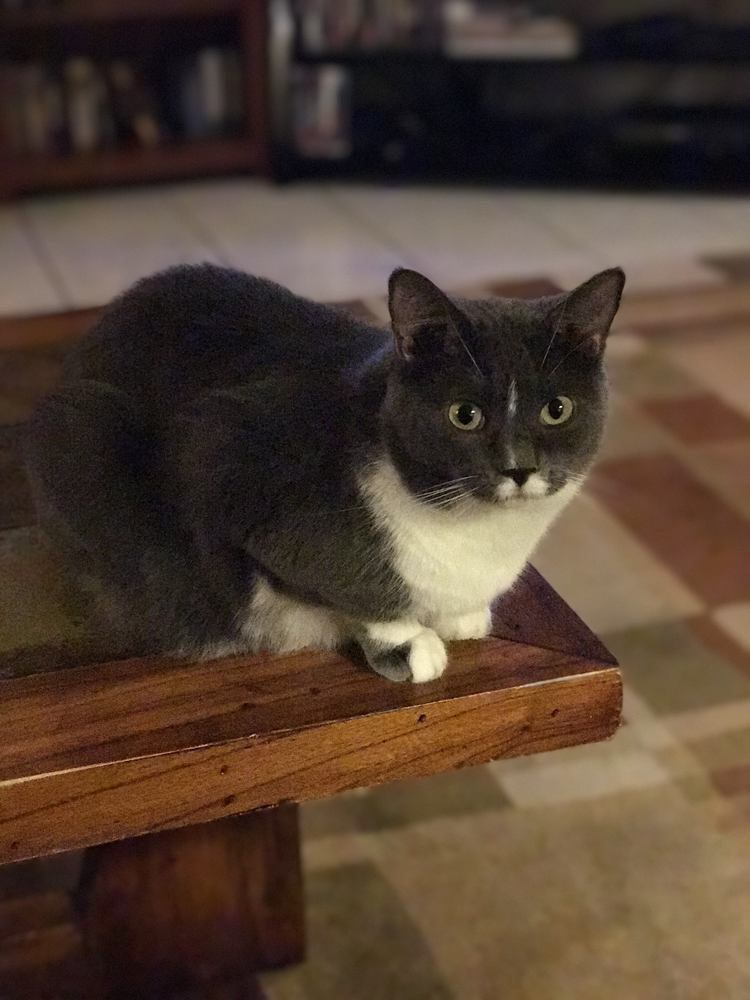
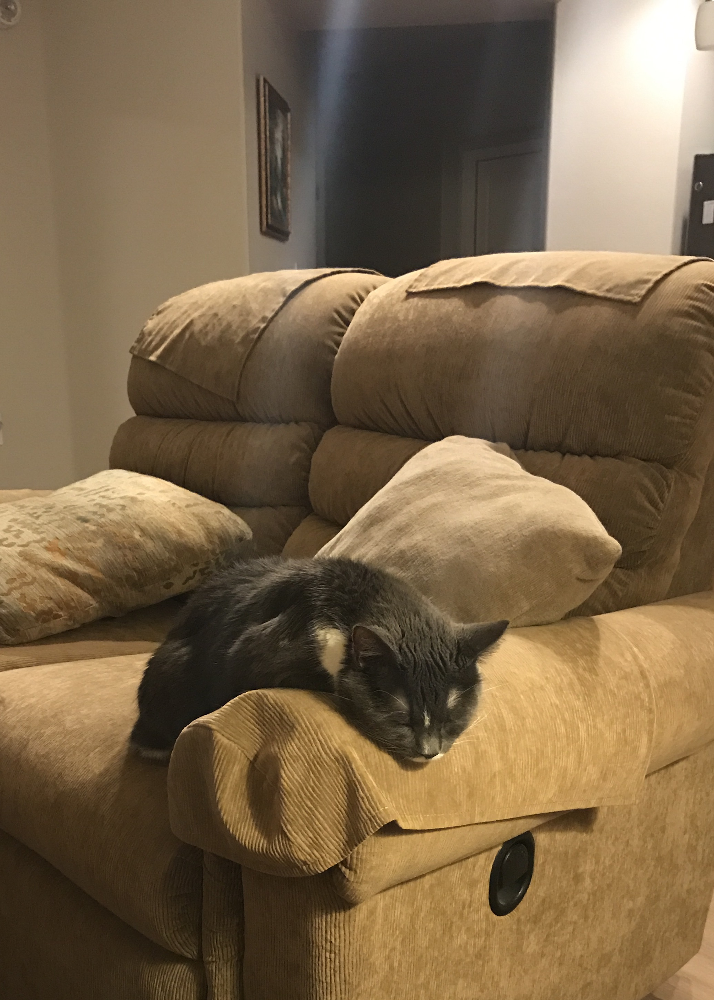

Cat's Rule!!!
The following are some reasons why cats are awesome pets, and a bit easier than some other types of animals (which will go nameless)!
- Number 1: Cats Purr
- Number 2: Cats Don't Jump on Your Friends When They Come Over
- Number 3: You Don't Have to Take a Cat Outside to Potty in Bad Weather
- Number 4: Cats Are Easy to Care For
- Number 5: Cats Are Quiet
- Number 6: Cats Help You Have a Healthy Heart
- Number 7: Cats Don't Roll in Yucky Stuff and Get Stinky
- Number 8: Cats Help Keep Your House Bug and Rodent Free
- Number 9: Cats Are Independent
- Number 10: Cats Are Funny

